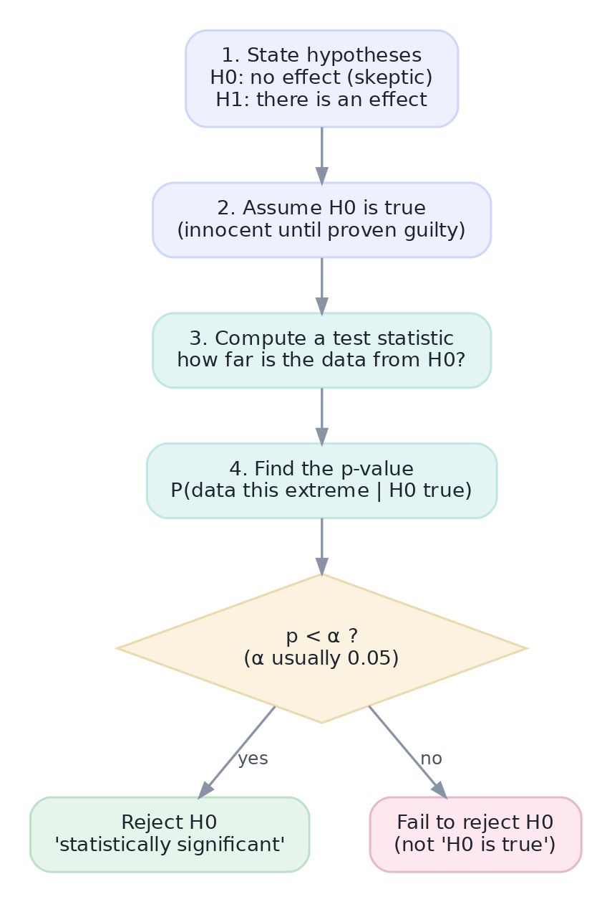
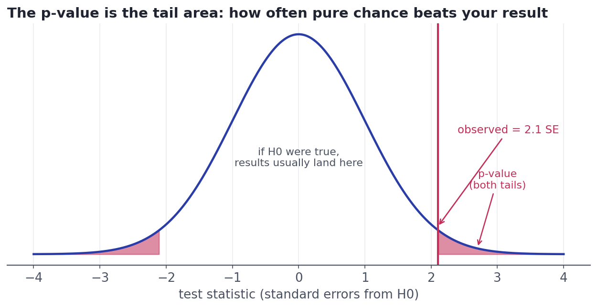
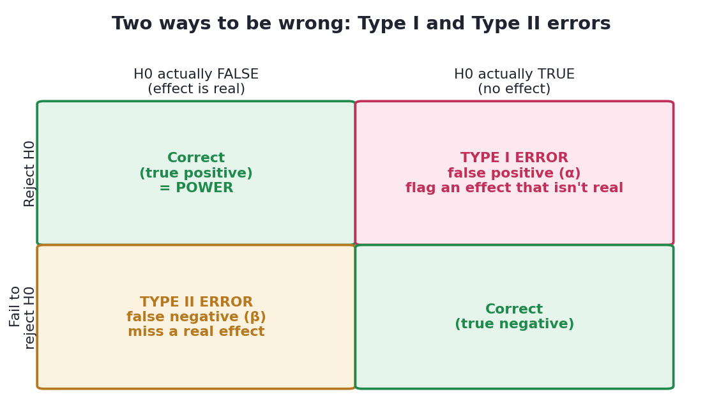
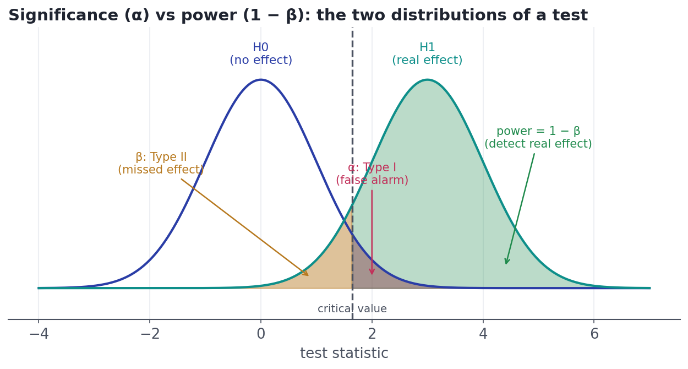

Hypothesis Testing: The Logic
Null and alternative, test statistic, p-value, and the two ways you can be wrong — the reasoning, not the recipe.
Back in Lesson 1.1 we found button B converted better than A — but couldn't say whether the gap was real or luck. Hypothesis testing is the formal machinery that answers exactly that question, on a firm logical footing, for almost any comparison you'll ever run. Master the logic here and the specific tests in the next lesson become plug-and-play.
Concept · the frameworkThe logic: assume innocence
Hypothesis testing works like a courtroom. We start by assuming nothing interesting is happening and ask the data to prove otherwise — beyond reasonable doubt.
- The null hypothesis (H₀) is the skeptic's default: no effect, no difference (button B is no better than A). This is 'innocent until proven guilty.'
- The alternative hypothesis (H₁) is the claim you'd act on: there is an effect (B differs from A).
We then assume H₀ is true and ask: if there really were no effect, how surprising would data like ours be? If it's surprising enough, we reject H₀ in favor of H₁.

Concept · the evidenceTest statistic and p-value
Two quantities turn 'is this surprising?' into a number:
- The test statistic measures how far your data falls from what H₀ predicts, in units of standard error. A statistic of 2.5 means 'your result is 2.5 standard errors away from no-effect' — the same z-score idea from Lesson 4.4.
- The p-value is the punchline: the probability of seeing data at least as extreme as yours, if H₀ were true. Small p-value → your result would be a freak event under no-effect → doubt is cast on H₀.

(1) It is not the probability that H₀ is true — it assumes H₀ is true to begin with. (2) It is not the size or importance of an effect; a tiny, meaningless difference can have a tiny p-value with enough data. (3) A large p-value does not prove H₀; 'we couldn't find an effect' is not 'there is no effect.'
Concept · decisions and errorsSignificance and the two ways to be wrong
To decide, we set a threshold before looking: the significance level α (alpha), almost always 0.05. If p < α we reject H₀ and call the result statistically significant; otherwise we fail to reject it. Because we're deciding under uncertainty, two mistakes are possible:

Choosing α = 0.05 means accepting a 5% Type I error rate — we'll wrongly flag a non-effect about 1 time in 20. The flip side is power = 1 − β, the chance of detecting a real effect. The two are in tension, mediated by the critical value:

Worked exampleSettle the Lesson 1.1 question
Time to answer the cliffhanger: was button B genuinely better, or did chance hand us that lift? This is a two-proportion test — comparing two conversion rates. We assume H₀: the rates are equal, then compute how surprising our observed gap would be.
import numpy as np
from scipy import stats
# Conversions from Lesson 1.1 (totals across the three days).
xa, na = 879, 12057 # variant A: 879 purchases of 12,057 visitors
xb, nb = 978, 12006 # variant B: 978 purchases of 12,006 visitors
pa, pb = xa/na, xb/nb
# H0: the two true conversion rates are equal. Pool them for the null SE.
pool = (xa + xb) / (na + nb)
se = np.sqrt(pool*(1-pool)*(1/na + 1/nb))
z = (pb - pa) / se # test statistic: gap in standard errors
pval = 2 * stats.norm.sf(abs(z)) # two-sided p-value
print(f"A = {pa:.3%} B = {pb:.3%} observed lift = {pb-pa:+.3%}")
print(f"test statistic z = {z:.2f}")
print(f"p-value = {pval:.4f}")
print("p < 0.05 -> reject H0: the lift is unlikely to be pure chance." if pval < 0.05
else "p >= 0.05 -> not enough evidence to call it real.")A = 7.290% B = 8.146% observed lift = +0.856% test statistic z = 2.49 p-value = 0.0129 p < 0.05 -> reject H0: the lift is unlikely to be pure chance.
There's the answer. The gap is about 2.5 standard errors out, with a p-value near 0.012 — a result this large would happen by chance only 1.2% of the time if the buttons were truly equal. We reject H₀: button B's lift is statistically significant. Notice what we did not claim — that B is hugely better, or that we're 98.8% sure it's better. We claimed exactly one thing: chance alone is an unlikely explanation. (Whether a 0.9-point lift is worth shipping is a business question — that's Track 6.)
Interactive labYour turn — run a real test
Two groups' measurements are in the lists group_a and group_b. Run a two-sample t-test with scipy.stats.ttest_ind and assign to answer the p-value, rounded to 4 decimals. Then decide for yourself: at α = 0.05, is the difference significant?
group_a, group_b → two lists of measurements; scipy.stats is imported.stats.ttest_ind(group_a, group_b) returns an object; take .pvalue, wrap in round(float(...), 4).answer = round(float(stats.ttest_ind(group_a, group_b).pvalue), 4)ttest_ind compares two independent means; the tiny p-value here says the gap is very unlikely under the null, so you would reject it at 0.05.
★ Key points to remember
- Hypothesis testing assumes the null (H₀: no effect) and asks whether the data is surprising enough to reject it.
- The p-value = P(data this extreme | H₀ true). Small p → the null is a poor explanation. It is not P(H₀ true) or the effect size.
- Reject H₀ if p < α (usually 0.05); otherwise fail to reject — which is not proving H₀.
- Type I = false positive (rate α); Type II = false negative (rate β); power = 1 − β.
- Statistical significance is about chance, not importance — always ask the effect size too.
◆ Practice▸
Show solution & reasoning
'If the new button were really no better than the old one, we'd see a lift this big just by random luck only about 1 time in 80 (p ≈ 0.012). That's unlikely enough that we don't think it's luck — the button probably does help.' The key moves: frame it as the chance of the result under the assumption of no effect, avoid jargon, and translate the probability into an intuitive frequency.
Show solution & reasoning
About 1 (20 × 0.05 = 1). Even with no real effect anywhere, a 5% false-positive rate means roughly one in twenty tests will look significant by chance. Lesson: if you run many tests (or peek repeatedly), some will 'hit' purely by luck — this is the multiple-comparisons problem, and it's why disciplined experimentation (Track 6) corrects for it.
◎ Deep dive: one- vs. two-sided tests, significance ≠ importance, and the α–power trade-off▸
One-sided vs. two-sided. Our A/B test was two-sided: we asked whether B differs from A in either direction, splitting the p-value across both tails. A one-sided test asks only whether B is better, putting all the probability in one tail (and so reaching significance more easily). Use one-sided only when a difference in the other direction would be genuinely irrelevant to your decision — and decide before seeing the data, never after, or you're just p-hacking.
Significance is not importance. With a large enough sample, any non-zero difference becomes statistically significant, because the standard error shrinks toward zero. A button that lifts conversion by 0.001% can have p < 0.001 at scale — statistically real, practically worthless. Always pair the p-value with the effect size and its confidence interval, and ask whether the magnitude matters to the business.
The α–power trade-off and sample size. Lowering α cuts false positives but, holding data fixed, raises false negatives (lower power). The only way to improve both at once is more data — which is precisely why experiments need a sample-size calculation before launch. We'll do that math in Track 6 (Experimentation & A/B Testing).
The number-one stats interview question is "explain a p-value to a non-technical person." Use a plain-language version of 'the chance of a result this big if there were truly no effect,' translate the probability into a frequency ('about 1 in 80'), and proactively name a misconception you're avoiding (it's not the probability the null is true). Then mention you'd also report the effect size — significance isn't importance.